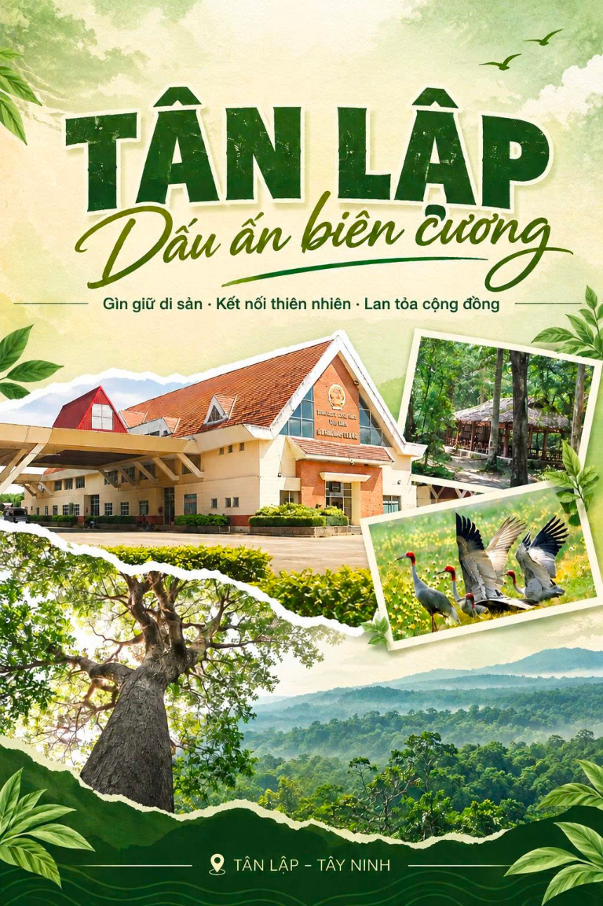
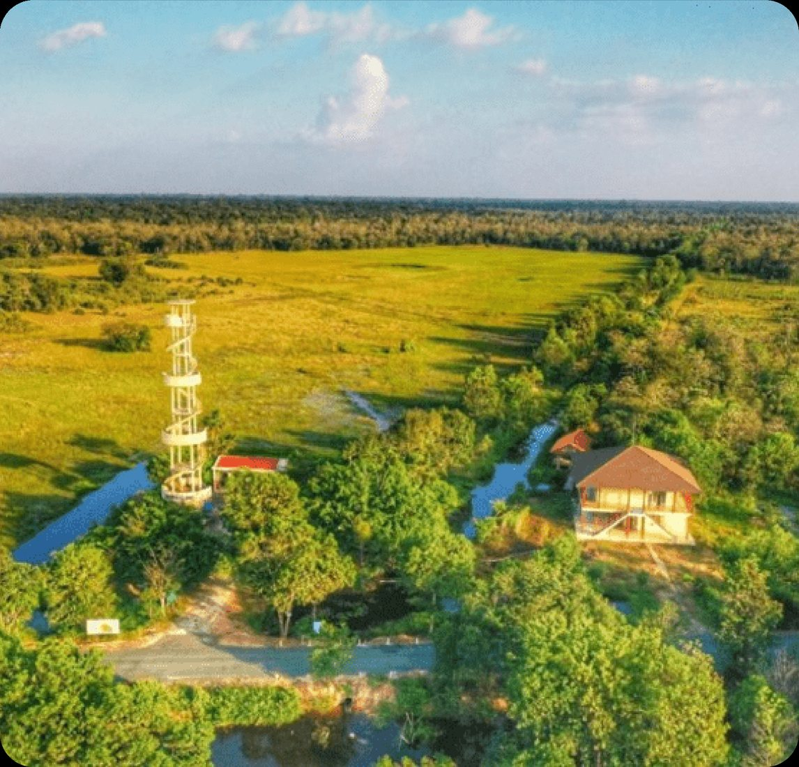
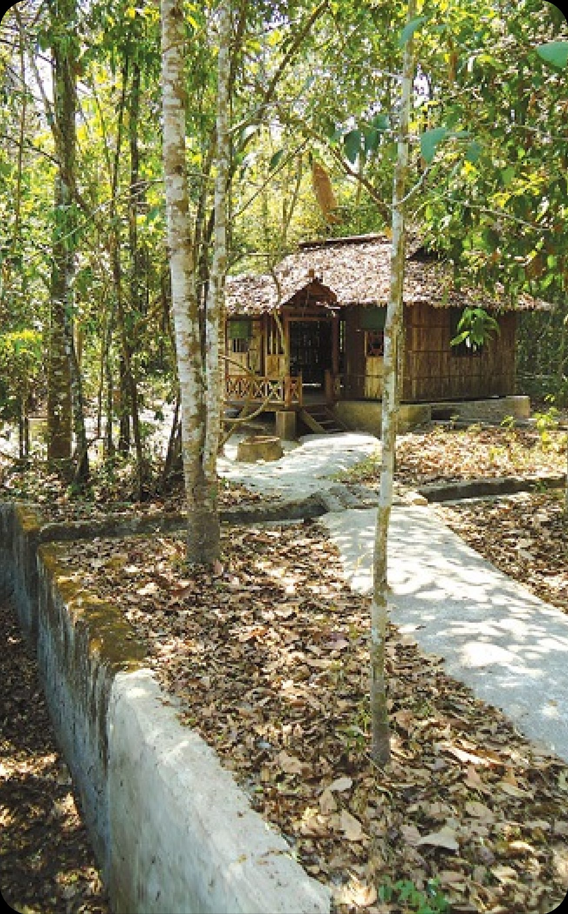
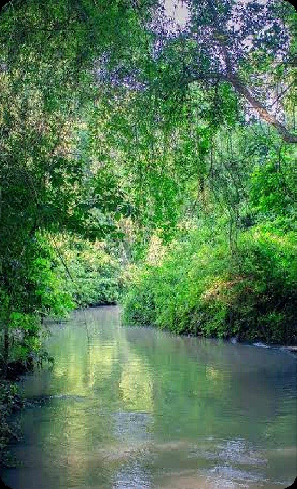
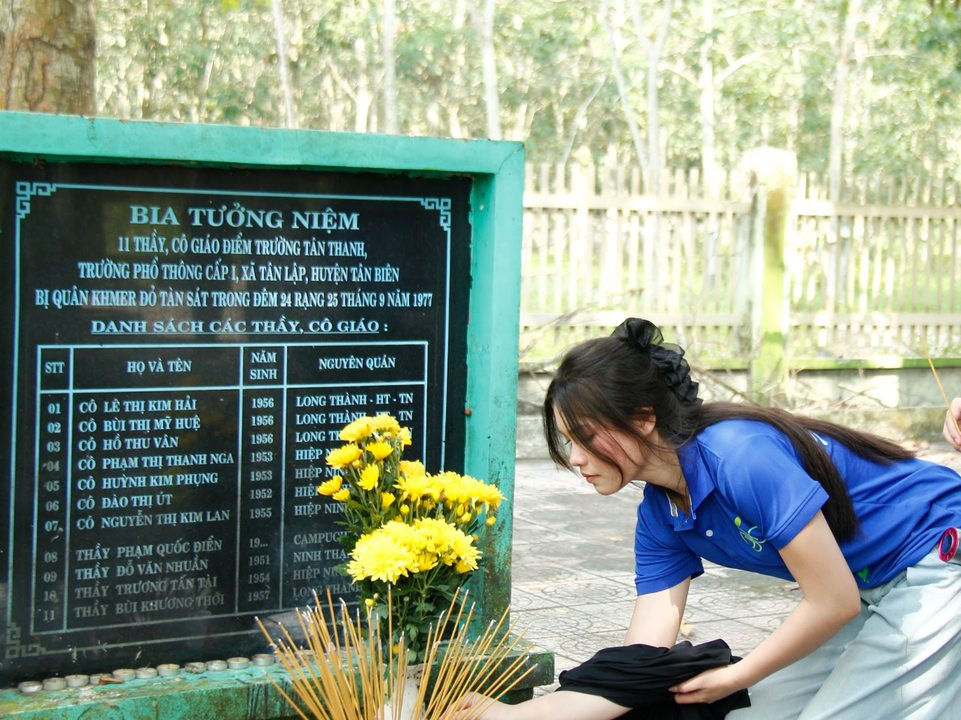
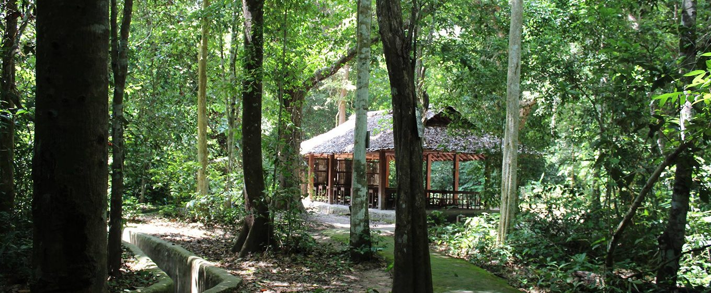
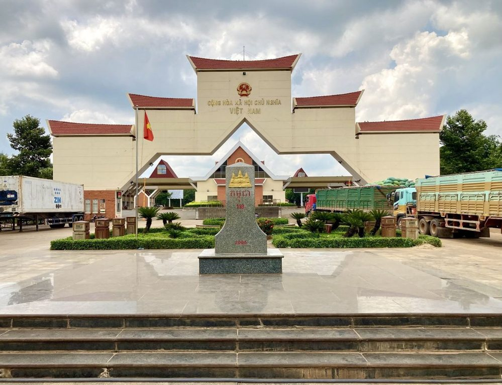
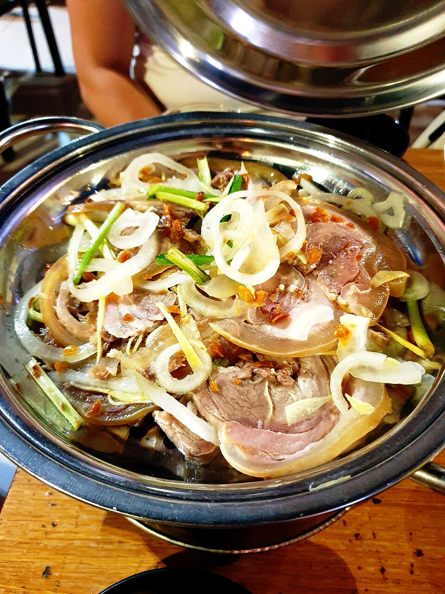

Gìn giữ ký ức
Nhìn lại lịch sử vùng biên qua những địa điểm chứng tích và hoạt động cách mạng, từ đó trân trọng hòa bình.
Giữa sắc xanh của thiên nhiên vùng biên, Tân Lập lưu giữ những câu chuyện lịch sử, kết nối con người và mở ra hành trình khám phá đầy ý nghĩa.

Tân Lập thuộc tỉnh Tây Ninh, nằm trong không gian kết nối Việt Nam – Campuchia. Những giá trị lịch sử, sinh thái và văn hóa cộng đồng tạo nên nét riêng cho vùng đất này.
Nhìn lại lịch sử vùng biên qua những địa điểm chứng tích và hoạt động cách mạng, từ đó trân trọng hòa bình.
Khám phá không gian rừng, suối và hệ sinh thái đặc trưng qua hành trình tìm hiểu thiên nhiên.
Tìm hiểu cửa khẩu quốc tế Xa Mát và câu chuyện kết nối cộng đồng, giao thương nơi biên giới.
Các địa danh tiêu biểu gắn với câu chuyện lịch sử và sinh thái vùng biên. Lưu ý kiểm tra điều kiện tham quan tại từng nơi trước khi đi.

Vườn quốc gia Lò Gò – Xa MátTìm hiểu thiên nhiên, cảnh quan rừng và giá trị bảo tồn hệ sinh thái vùng biên.
Tìm trên bản đồ
Rừng Chàng RiệcKhông gian rừng được giới thiệu như một dấu ấn sinh thái và lịch sử của khu vực.
Tìm trên bản đồ
Suối ChòĐiểm sinh thái được nhắc đến trong tài liệu, phù hợp đưa vào nội dung khám phá thiên nhiên.
Tìm trên bản đồ
Khu chứng tích tội ác Khmer ĐỏĐịa điểm tưởng niệm, nhắc nhớ những mất mát trong quá khứ và ý nghĩa của hòa bình.
Tìm trên bản đồ
Di tích Ban An ninh Trung ương Cục miền NamTìm hiểu dấu ấn hoạt động cách mạng và những câu chuyện lịch sử đáng trân trọng.
Tìm trên bản đồ
Cửa khẩu quốc tế Xa MátBiểu tượng kết nối Việt Nam – Campuchia, gắn với giao thương và đời sống vùng biên.
Tìm trên bản đồHành trình Tân Lập được kể bằng ba lớp trải nghiệm: hiểu lịch sử, cảm nhận thiên nhiên và đóng góp cho cộng đồng.
Chọn một hướng trải nghiệm để xem lịch trình gợi ý. Đây là đề xuất chủ đề, không phải tour đã xác nhận; thứ tự và thời gian thực tế cần kiểm tra với điểm đến.
* Trước khi tham quan, kiểm tra giờ mở cửa, quy định khu vực biên giới, phương tiện di chuyển và điều kiện thời tiết. Website chưa cung cấp dịch vụ đặt tour.
Gợi ý đặc sản Tây Ninh cùng một số quán ăn và nơi lưu trú để bạn tham khảo. Hãy hỏi trước về thực đơn, giờ hoạt động và tình trạng phục vụ.
Thưởng thức cuốn cùng rau rừng và các món ăn kèm; hỏi quán về cách dùng và nguyên liệu sẵn có.
Tìm món trên Google MapsMón nước đặc trưng của Tây Ninh; kiểm tra địa điểm phục vụ gần tuyến đi trước khi ghé.
Tìm món trên Google Maps
Có thể hỏi các quán địa phương về món bò tơ và những món ăn theo ngày.
Tìm món trên Google MapsẢnh minh họa: Phương Huy / Wikimedia Commons (CC0)Một số lựa chọn ăn uống để bạn tham khảo.
Liên hệ cơ sở để xác nhận phòng, giá và thời gian nhận khách.
Xem khu vực trên Google Maps và mở bản đồ để tìm đường đến quán ăn, điểm tham quan hoặc nơi lưu trú.
Mở Google MapsMột vài thông tin cần chuẩn bị để hành trình an toàn và chủ động hơn.
Kiểm tra bản đồ, khả năng tiếp cận của từng địa điểm và thông tin liên hệ chính thức trước chuyến đi.
Chuẩn bị giày phù hợp, áo chống nắng hoặc áo mưa khi tham gia hoạt động ngoài trời.
Không xả rác, không làm ảnh hưởng đến động thực vật, tuân thủ hướng dẫn của đơn vị quản lý khu bảo tồn.
Giữ thái độ trang nghiêm tại điểm tưởng niệm và tuân thủ quy định an ninh, chụp ảnh của từng địa điểm.
Ưu tiên hoạt động tìm hiểu cộng đồng, ứng xử tôn trọng người dân và gìn giữ cảnh quan địa phương.
Địa điểm và dịch vụ có thể thay đổi; hãy gọi hoặc nhắn cơ sở để kiểm tra hoạt động, thực đơn, giá và chỗ nghỉ.
Hãy bắt đầu từ những câu chuyện lịch sử và sắc xanh thiên nhiên.